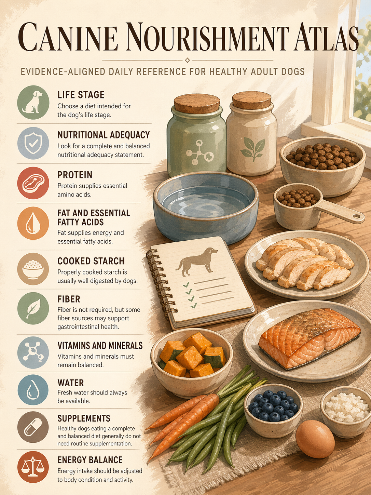
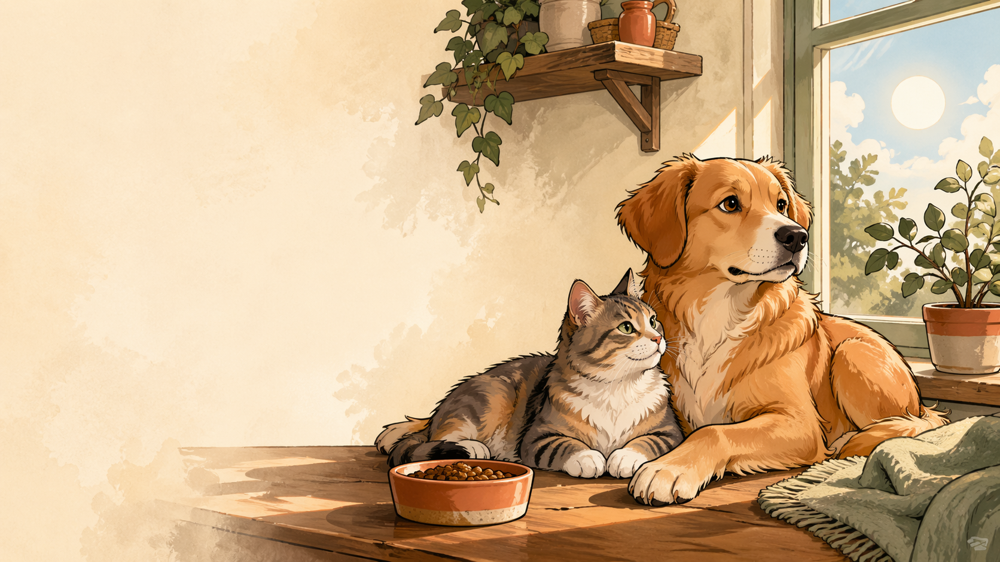
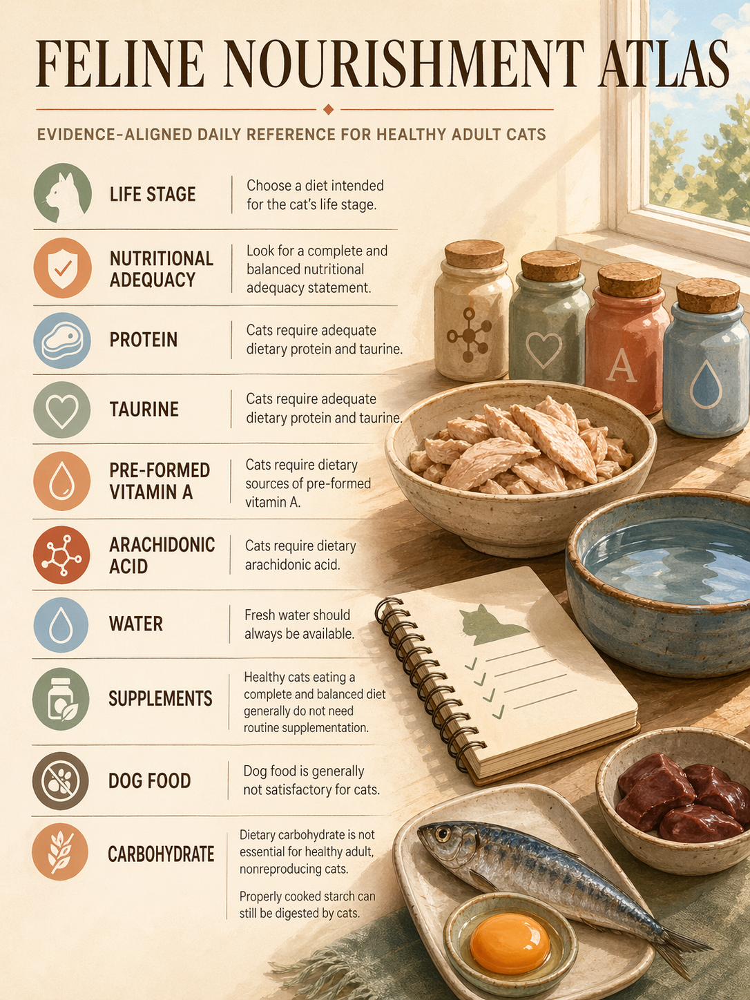

Dog food basics
A visual overview of adult-dog food basics, label cues, and portion context.
pet calculators, calm guides, useful little rituals
Simple tools for meals, weight, calories, water, reminders, and product notes without turning pet care into a spreadsheet.

tool shelf
first build candidate
These are planning estimates for everyday decisions. Serious diet, vaccine, medication, or safety questions still belong with a veterinarian.
visual guides

A visual overview of adult-dog food basics, label cues, and portion context.

A visual overview of taurine, hydration, and feline feeding cues.
food notes

Use life stage, calories per cup, feeding directions, and body condition together.

Calories, meal rhythm, wet-versus-dry volume, and appetite all matter.

Most treats are extras, not nutritionally complete diets, and their calories still count.

Price the usable calories, not just the bag.

The adequacy statement matters more than front-of-bag confidence.
editorial standards
These pages stay inside everyday nutrition, budgeting, label-reading, and planning questions. They do not diagnose disease, choose treatment, give medication doses, or replace a veterinarian when the question turns medical.